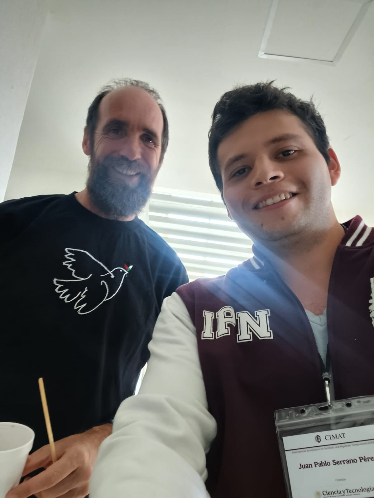
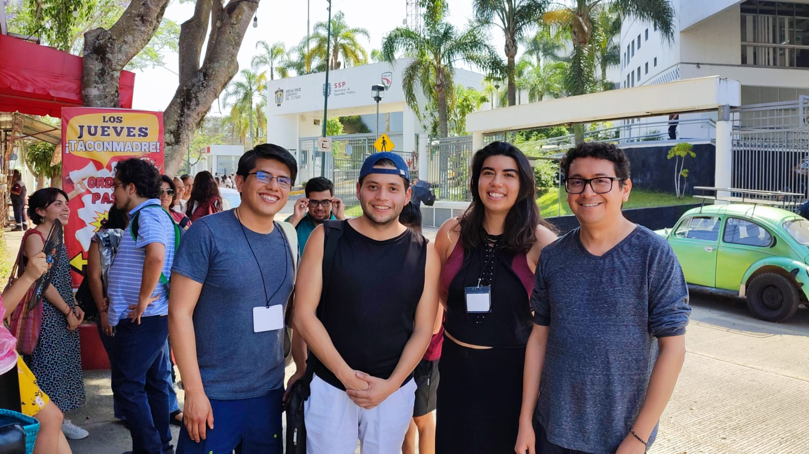
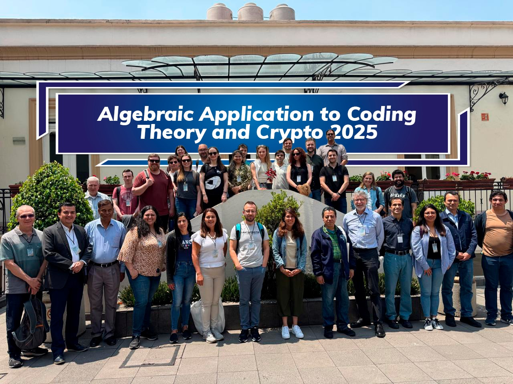
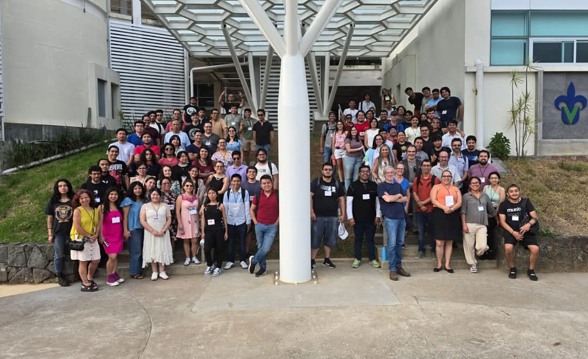
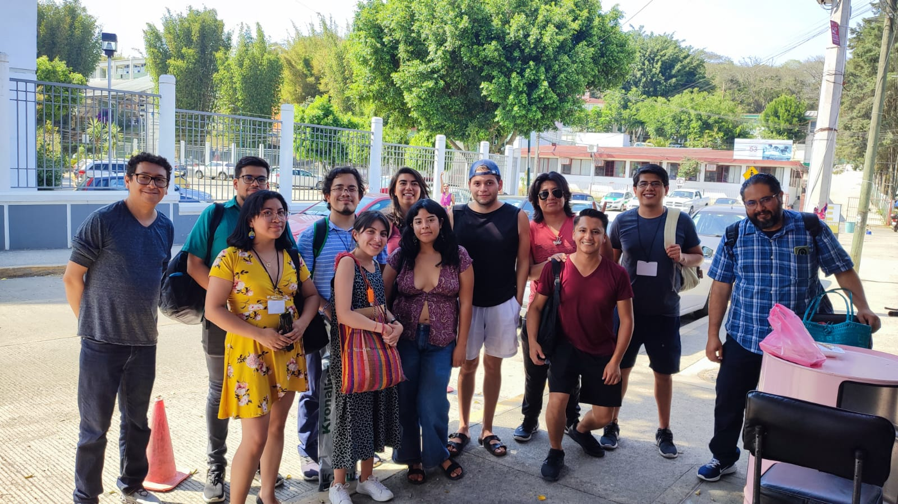
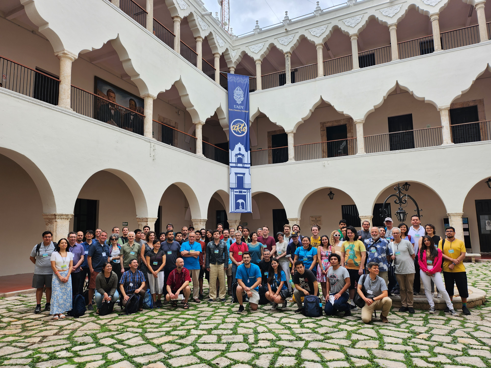
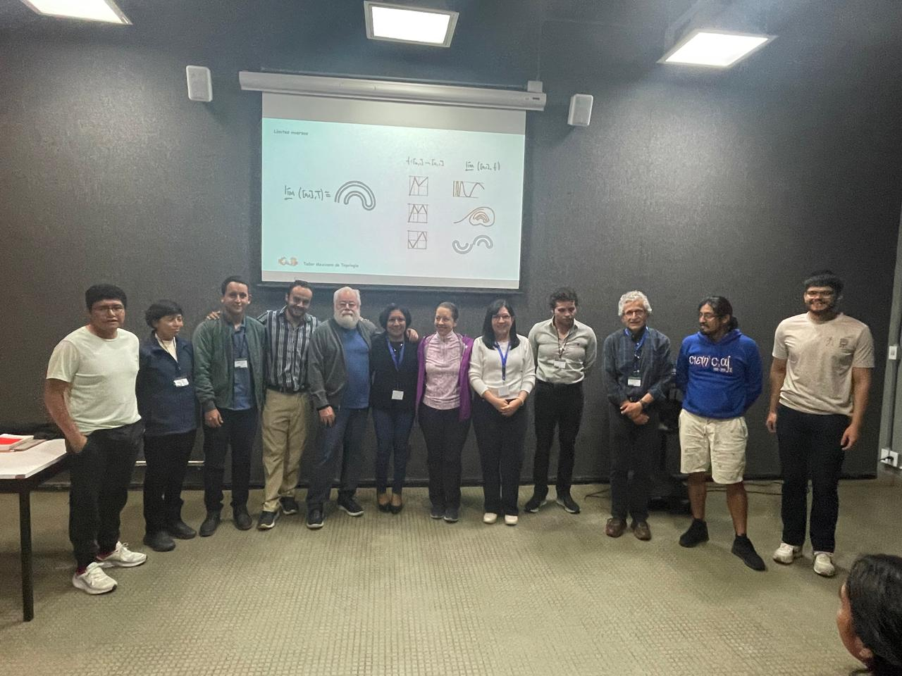
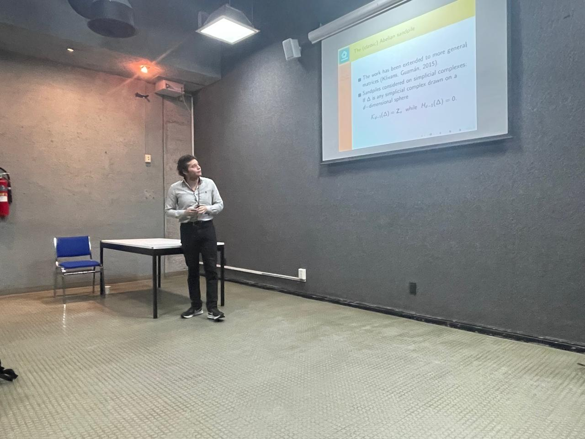

Some photos of some events

Eduardo Sáenz de Cabezón (from Derivando) and & I at the International Symposium on Symbolic and Algebraic Computation, July 2025.

Outside Taco loco near
the University of Veracruz at Coloquio Víctor Neummann, April 2025.
From left to right: Dr. Miguel Licona, me, Dr. Teresa Hoekstra-Mendoza, and Dr. Carlos A. Alfaro.

Algebraic Applications to Coding Theory and Crypto workshop in Mexico City, March 2025.

Coloquio Víctor Neummann, April 2025.

Coloquio Víctor Neummann, April 2025
Outside Taco loco.

GEOTOP-A International Conference
Applications of Geometry and Topology, January 2024 at University of Yucatán, Mérida, México

Taller mexicano de topología
Section of dynamic systems, UNAM, México, June 2025

Me talking about sandpiles at UNAM, June, 2025